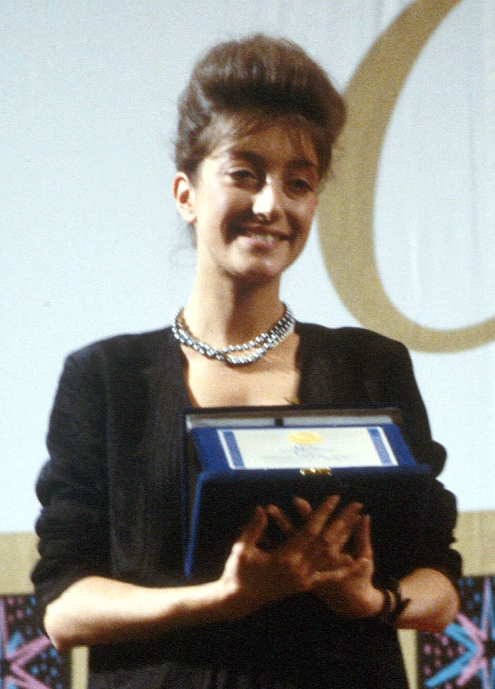
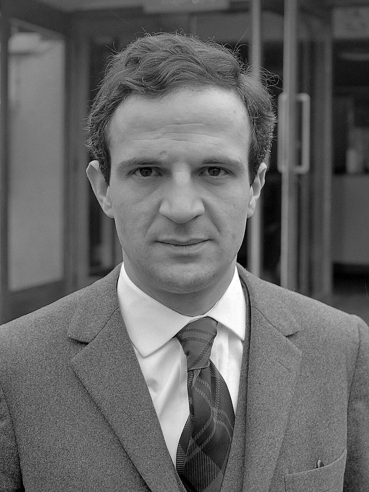
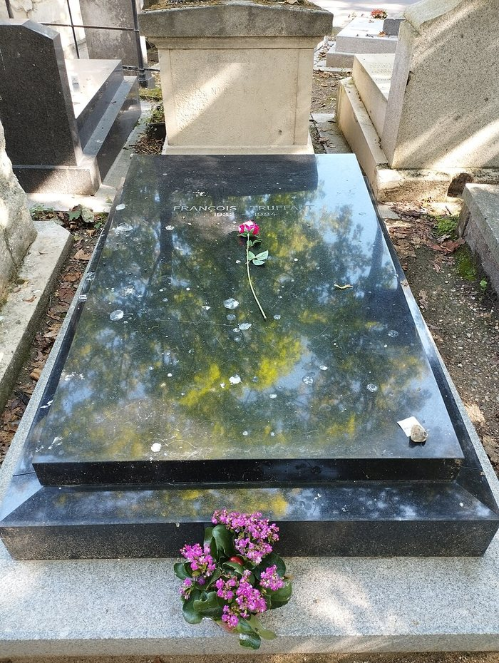
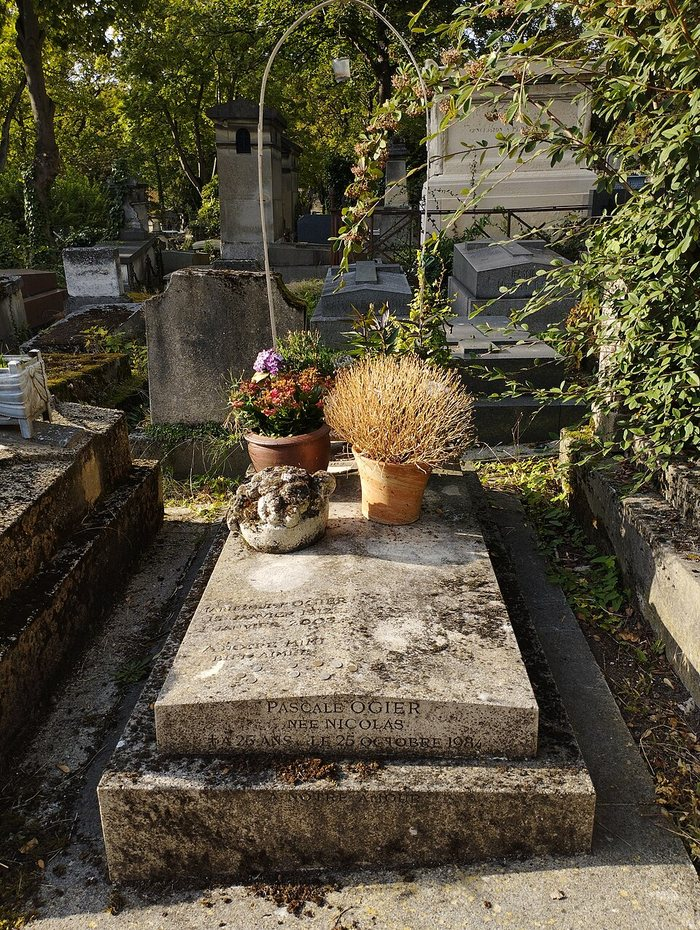

Parigi, ottobre 1984
Pascale et François
Ottobre 1984, quattro giorni, due cimiteri. Su una poesia di Ucronie e su una passeggiata d'inverno a Parigi.


Nell'ottobre del 1984 Parigi perde due volte in quattro giorni: il 21 muore François Truffaut, cinquantadue anni, un tumore al cervello che gli aveva già tolto le parole; muore a Neuilly, sul bordo della città. Il 25 muore Pascale Ogier, a Parigi, la notte prima del suo ventiseiesimo compleanno. La bravissima e affascinante Pascale a settembre era tornata da Venezia con la Coppa Volpi per Le notti della luna piena di Rohmer. François morto giovane, nel pieno della sua attività di cineasta, con una bambina di un anno, Joséphine, avuta da Fanny Ardant. Pascale era l'astro nascente del cinema europeo, musa di Rohmer e interprete di film già di culto, ed era all'inizio. Me la immagino in un film di François che non è mai stato girato. Non hanno mai lavorato insieme.
Truffaut è sepolto a Montmartre e Pascale Ogier al Père-Lachaise. Nella mia poesia ho fatto la strada tra le due tombe a piedi, da nord a est, attraverso mezza città. La poesia è nata lì ed è una di quelle corte: il 1984, i quattro giorni, i due cimiteri e la mia camminata. Non c'è altro da aggiungere, e infatti non l'ho aggiunto.


Quello che li tiene insieme, oltre al calendario, è che tutti e due hanno avuto a che fare con i morti che continuano a parlare; mi viene in mente anche Gabriele Galloni. Truffaut nel 1978 aveva girato La camera verde, la storia di un uomo che tiene accese le candele ai suoi morti e s'immerge nella vita oltre la vita. Pascale Ogier, nel 1983, in Ghost Dance di Ken McMullen, aveva chiesto a Jacques Derrida se credeva ai fantasmi; lui le aveva risposto che il cinema è l'arte di farli tornare. Derrida rivide il film dopo la sua morte e raccontò che la domanda, dallo schermo, gliela faceva ancora lei.
Mi addormento spesso davanti ai film di Truffaut, per stanchezza, non per noia. È un'altra poesia del libro, e anche quella resta lì. Qui c'è solo il motivo della passeggiata.
Pascale et François è in Ucronie, raccolta in lettura presso l'editore. Il testo non è riprodotto.